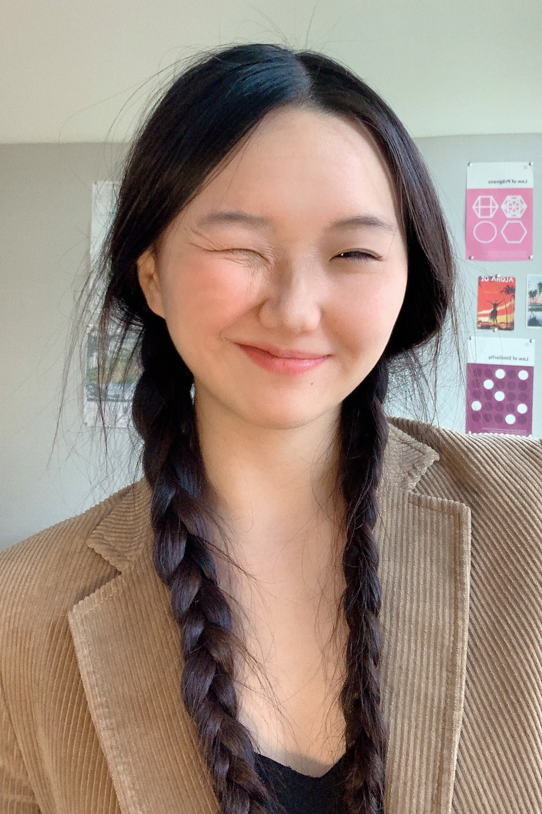
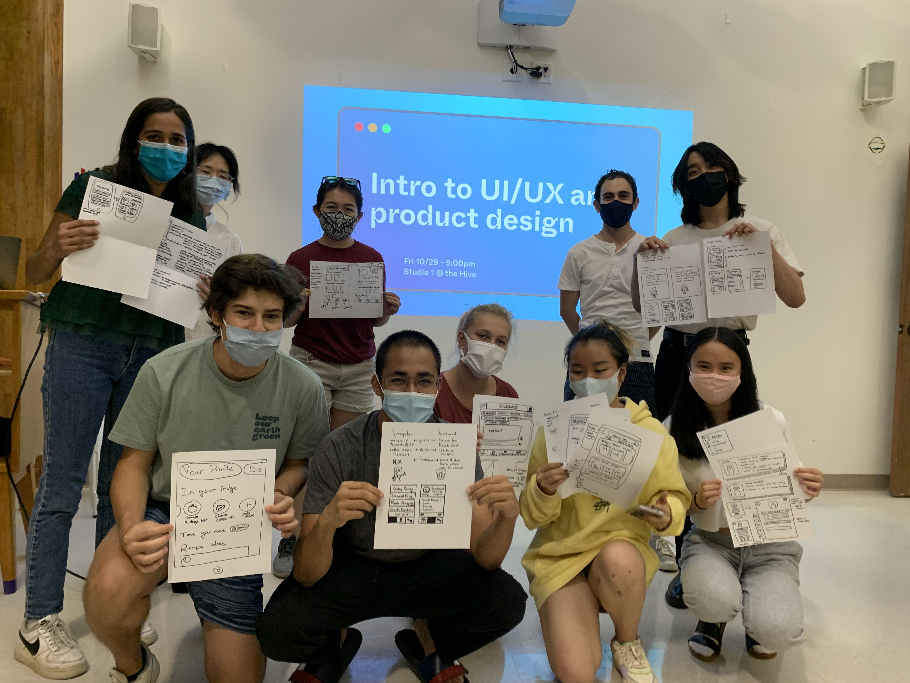

Hi again! I’m Ava.
I’m a designer who likes trying to solve problems in unconventional ways.
I get my 🔍 research and analysis skills from my international relations dual major, 🕹️ persistence from my love of games, and 💼 practicality from my student consulting work with local startups.
In my free time, I like improving my FPS aim, figuring out French pronunciation, and perfecting my homemade bubble tea (tips appreciated)! 📚🍵

CHOOSE A CARD (ANY CARD)... ✨
THE PAST
Sudden change, upheaval, chaos, revelation, awakening
In 2016, I received my first ever PC. I started watching Twitch streams for Overwatch and League, and I joined my first ever Discord community.
It was Destiny 2 that really made me realise that designing interfaces in games could be an art form. I played the beta at launch and spent around 1,000 hours in D2 over the course of 2018-2019.
My proudest achievements? Being the 52nd in the world to clear the Zero Hour dungeon, and two-manning Calus and Argos (less impressive than it sounds).
THE PRESENT
Apprenticeship, repetition, mastery, development
UX — or even just design in general — isn’t offered as a major on my campus.
I first discovered UX in winter 2020, and had no clue what it really was. I took part in 3 designathons with total strangers in the spring, and have been attending an ever-increasing number of conferences and mentor sessions to try and figure it out.
Since then, I’ve been institutionally funded for a couple of projects analysing UX and visual design in different contexts.
I’m also very passionate about creating communities through design! I founded Claremont Design Co. as a resource base in response to the lack of design opportunities available on campus.

THE FUTURE?
Progress, expansion, foresight, opportunity
Even though I’m pursuing a design career, I’m hoping to expand my understanding of linguistics and maintain my interest in analysis and IR.
I started learning Russian as a way to connect more with my grandma, who was selected for the short-lived Sino-Soviet student exchange programme.
I’ve also been trying to push myself out of my comfort zone through student consulting, where I’m working directly with startups and small businesses to get hands-on project experience (and understand how UX actively impacts business).
When I have time, I’ll also be exploring three.js!